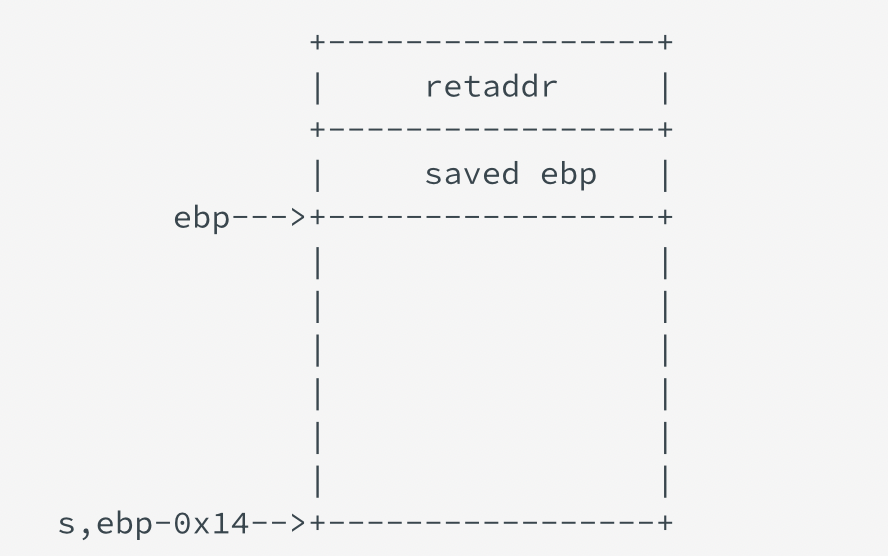

最近在做一些ROP（全称为Return-oriented programming，返回导向编程）的简单题，虽然简单，但是我不会啊。我对于栈的相关知识还是很贫瘠的，然后对相关知识也没有成体系的了解，不过还好有人可以请教，不至于非常抓瞎。然后基本上是通过做题学习相关知识，然后这里备忘一下。
栈溢出相关知识
我对栈的了解仅存在于一些基本的概念，比如说先进后出，从高地址向低地址增长，esp存放栈顶地址，ebp存放栈底地址。
在ROP中，需要通过栈溢出覆盖返回地址，那么如何构造payload来覆盖返回地址呢。下面是CTF Wiki栈溢出原理中一张栈的结构图。我之所以ret2win无从下手就是因为我连栈的结构我都不太了解。
这里需要理解两个地方，第一在存放数据的时候，数据从低地址往高地址存放，所以会覆盖ebp和返回地址。第二点，返回地址前面有一块内存是ebp，这里是存放了之前的ebp地址（用于后续恢复上下文），32位是4个字节，64位是8个字节。所以想要覆盖返回地址的时候，除了把当前栈空间覆盖还需要把ebp也覆盖了。
知道了如何返回地址的覆盖，那如果要调用的函数，参数如何传递的我又不清楚了。下面这张图是函数调用栈的方法。摘自CTF Wiki栈介绍

环境搭建
ROP Emporium有一个Beginners’ guide里面提到一些工具的使用，pwntools和pwndbg是一定要安装的。我在kali下安装环境还弄了挺久的。现在只记得两个问题。
第一个是下载pwndbg疯狂报错相关版本不适配，这里换清华或者其他的镜像之后，update一下，但是换源的教程一定要找一个靠谱的，不然白折腾。
第二个就是pwntools，需要python3的环境，但是kali系统自带的是pyhton2.7，所以下载一个virtualenvwrapper，方便python版本管理。
相关工具使用
checksec
1 | checksec filename |
查看几种安全机制是否开启。
pwntools
pwntools是一个帮助写EXP的框架，因为这里是为了做题，所以我直接抄的模版，之后主要是改payload。
1 | #!/usr/bin/env python |
ROPgadget
用来找需要的gadget的工具，并且可以通过grep添加限制条件，进一步找需要的gadget。
1 | ROPgadget --binary rop --only “pop|ret” | grep "eax" |
pwndbg
pwndbg是一个gdb插件，用来动态调试看栈的变化。常用指令包括：
1 | help --帮助 |
ROP Emporium Writeup
基本解题步骤
- checksec检查程序的安全机制
- ida逆向，主要是看漏洞点，重点关注一些危险函数。

- 通过分析，找到需要填充的长度。
- 构造payload，这个地方可能还需要找gadget来构建完整的攻击链。
ret2win
32位
checksec查看一下发现，ret2win开启NX，堆栈不可执行。

然后用ida看一下程序，看见main函数里面调用了pwnme函数，pwnme里面可以看到s到ebp的距离是40个字节，但是读的时候read了0x38个字节，存在栈溢出漏洞。所以需要覆盖的大小40个字节和4个字节的ebp。

并且发现一个有意思的函数ret2win，可以直接读取flag.txt文件，用ida可以看到ret2win函数的地址是0x0804862C。

直接构造payload = b'A'*40 + b'B'*4 + p32(0x0804862c)
这里还有另一个方法获得ret2win函数地址的方法，用 elf.sym.ret2win，通过符号表直接获得ret2win函数的地址。
64位
64位和32位差不多，但是64位ebp长度为8个字节，s到ebp为32个字节，所以一共需要40个字节。
构造payload = b'A'*32 + b'B'*8 + p64(0x0400756)
split
32位
split和ret2win很像，但是split里面没有可以直接使用的函数了，usefulFunction无法直接读取flag，经过提示看了一下字符串窗口，发现了一个userfulString，需要控制返回地址跳到system函数执行，然后userfulString作为参数传递给system函数。这里找到了usefulString的地址为 0x0804a030 。

现在需要找到system()函数的地址，system函数是外部函数，需要动态链接调用，第一个方法是直接通过 elf.plt.system 获得system的plt地址，就可以调用该函数。
那么结合之前说的32位的函数参数在返回地址上面，那么我就很理所当然的构造了一番payload = b'A'*40 + b'B'*4 + p32(elf.plt.system) + p32(addr_usefulString) ，但是报错了，我想了半天都没想明白，然后场外求助了一下，说了半天我才懂，笑死。
这个要从函数调用传参设置返回地址的整个过程说起。这一部分参考了手把手教你栈溢出从入门到放弃（上）的0x20 背景知识和 0x50 Return2libc，加了点我自己的理解，弄巧成拙警告，如果有错误欢迎指出。

上面这张图是函数调用完成后的栈的样子，arg是被调用函数的参数，然后是返回地址，然后是ebp。这就相当于被调用函数（callee）的参数在调用函数（caller）的栈内保存，被调用函数（callee）的栈和调用函数（caller）的栈之间隔了一个返回地址，这个返回地址是调用完函数之后的下一条指令，而不是参数和函数地址直接相连。
我们希望将返回地址设为system函数的地址，usefulString做为函数参数，但是两者之间还有一个 返回地址，所以payload改为payload = b'A'*40 + b'B'*4 + p32(elf.plt.system) + p32(0) + p32(addr_usefulString)
在找资料的时候还看到一个解法。
在 0x0804861a 的地方，system作为一个子例程被调用（我的理解是直接就是一个gadget），这里不需要管返回地址，直接传参数即可。payload = b'A'*40 + b'B'*4 + p32(0x0804861a) + p32(addr_usefulString)

64位
64位传参和32位不太一样，总结如下：
- 64位通过寄存器传参，前六个整型或指针参数依次保存在 %rdi, %rsi, %rdx, %rcx, %r8, %r9 中
- 传参操作要通过gadget实现，system函数只需要传递一个参数，所以要通过 pop rdi 实现参数传递
- 函数参数传递是在函数执行之前
这里我还疑惑过，为什么是靠pop来传参的，而不是mov指令或者push。我真的好傻*，汇编也是一窍不通，pop指令的含义——弹出堆栈指令，将栈顶的数据弹出并存至 dst，格式为 pop dst; 。如果到这里你还不知道为什么要用pop，那我只能说你连我都不如了。而且我猜你肯定也不知道ret有 pop eip的含义（并没有说一样的意思，RET——返回指令，操作为将栈顶数据弹出至 eip）。
系统调用参数的传入如果不理解可以参考手把手教你栈溢出从入门到放弃（下）
所以构造payload = b'A'*32 + b'B'*8 + p64(addr_pop_gadget) + p64(addr_usefulString) + p64(addr_system)
usefulString和system函数地址的获取和之前一样，gadget地址的获取是通过ROPgadget工具来找到的。

callme
32位
callme这道题和前两道题都不太一样，它要调用三个函数才能构成完整的攻击链，并且函数也需要传递三个参数。
用ida打卡callme函数，依旧是pwnme出问题，然后calllme_one,calllme_two,calllme_three都是需要动态链接的外部函数。
首先尝试用之前的知识先尝试调用一个函数，这里唯一不太一样的是多个参数时，是从左往右一次入栈，但是不要忘了我们覆盖是从栈顶向底部覆盖的，所以构造payload = b'A'*40 + b'B'*4 + p32(elf.plt.callme_one) + p32(0) + p32(0xdeadbeef) + p32(0xcafebabe) +p32(0xd00df00d)

可以看到成功执行了callme_one函数，那么接下来只需要调用calllme_two就可以了（call_three一样套路），然后我就思考如何调用callme_two，想了两个方案：
- 把下一条指令地址改为callme_two的地址，那么自然会跳到callme_two的地方执行；
- gadget找jmp指令，跳转到callme_two执行
然后苦苦挣扎了非常久…然后寻求了场外求助，我知道无语了，我以为会了一题就能举一反三融会贯通，马上做完剩下两道题。
第一种方法是比较靠谱的思路，但是不管怎么构造payload，都是报错说参数不对。
再一次回到最初的函数调用时栈的结构，函数的参数并不会再函数执行完之后直接也从栈中pop出去，而是依旧停留在调用函数的栈中，所以callme_one的参数还是在内存中，callme_two无法正确传参。

所以需要用一个gadget把callme_one的参数先pop出来，好存放callme_two的参数，通过ROPgadget找到了这样的片段，地址为0x80487f9。

最后构造
1 | payload = b'A'* 40 + b'B'*4 + p32(callme_one)+p32(0x080487f9)+p32(0xdeadbeef)+p32(0xcafebabe) + p32(0xd00df00d) +p32(callme_two)+p32(0x080487f9)+p32(0xdeadbeef)+p32(0xcafebabe) + p32(0xd00df00d) + p32(callme_three) +p32(0x080487f9)+p32(0xdeadbeef)+p32(0xcafebabe) + p32(0xd00df00d) |
64位
其实我觉得64位会更直接更简单粗暴一点，直接用之前split64位的思路解题就可以了，唯一需要注意的就是参数传递是：
1 | 0xdeadbeef -> rdi |
通过ROPgadget找到对应gadget地址为0x40093c。

构造payload为：
1 | payload = b'A'* 32 + b'B'*8 +p64(0x40093c)+ p64(0xdeadbeefdeadbeef)+p64(0xcafebabecafebabe)+ p64(0xd00df00dd00df00d) + p64(callme_one) +p64(0x40093c)+ p64(0xdeadbeefdeadbeef)+p64(0xcafebabecafebabe)+ p64(0xd00df00dd00df00d) + p64(callme_two)+p64(0x40093c)+ p64(0xdeadbeefdeadbeef)+p64(0xcafebabecafebabe)+ p64(0xd00df00dd00df00d) +p64(callme_three) |
当时做完还有一个疑问就是，callme的三个函数都是用一样的寄存器一样的参数，为什么还需要pop呢，pwndbg调试可以发现是在执行过程中寄存器发生了改变。
write4
32位
这道题的题目描述非常大一段，给了不少提示，一个是没有可利用的字符串了，需要自己向内存中写入，这里提示了一个gadget mov [reg] reg 。然后说用rabin2或者readelf自己找可写入的地方。
然后用ida分析write4文件，和之前差不多，但是pwnme函数这次也在lib.so文件里面了，依旧是read函数出现问题，需要覆盖的长度为40个字节。并且在lib.so文件里面看到print_file函数，可以读取文件，那么这个函数就是我们要利用的函数，然后并没有现成的字符串可以使用，所以需要依照题目中提示的gadget构造ROP链。
那么第一步先用ROPgadget找gadget。地址为 0x08048543。

然后该gadget是将ebp中的内容写到edi中地址对应的内存空间，当时的第一想法是这里需要对ebp进行控制，然后就开始走偏了。
接下来是走的一段岔路。
首先callee函数的ebp中存放的是caller函数的ebp用于之后恢复，那么ebp也是可控的，把callee的ebp中的地址填写为返回地址上面一点的地方，那么可以构造payload控制caller函数的ebp。为了控制ebp，我还得先知道目标指令执行到内存的哪个位置了，好填写ebp，pwndbg调试折腾了半天，我还关了ALSR保证每次都是一个位置，成功将flag写入了got表入口，然后我就不知道怎么办了，一个是这种方法只能写4个字节，但是flag.txt是是8个字节，在使用这个gadget的时候，edi默认位置在got表开头，还不知道能不能这么写。
然后寻求场外求助。首先edi的值是可以控制的，所以需要找到一个位置，写入flag.txt，在pwndbg中使vmmap可以查看读写权限。当然其他方法也可以，题目描述中给的是rabin2和readelf，但是我不会用。
然后可以看到write432文件里面的 0x804a000 - 0x804b000 是可写的，用ida打开看一看，0x804a000 刚好是.got.plt开始的位置，然后还有data段，bss段，然后我选了bss段写入需要的字符串，地址为 0x804a020


确定写入位置之后，就直接找一个gadget控制edi就行了，这里还发现这个gadget非常巧妙，它第二个pop的是ebp，刚好串上了，不用其他方法控制ebp了。

两个gadget都找到了，那么只需要分两次写入flag和.txt就完成了目标字符串写入内存，print_file函数的调用和前几题相同。
构造payload：
1 | gadget_1 = 0x080485aa |
64位
64位也是差不多的思路，找一个mov [reg] reg的gadget把字符串写入内存之后调用print_file函数就可以了，而且64位的寄存器是8个字节，可以一次写完flag.txt。
因为思路差不多，所以直接找gadget，不过64位需要找3个gadget，一个是控制mov相关寄存器的指令，一个是mov指令，还有一个传参的指令。这里发现有两个符合我们需要的gadget，但是edi参数没有合适的gadget控制，所以我们选取第二个。

构造payload：
1 | gadget_1 = 0x400690 |
小结
做到这也算是十窍通了九窍，继续加油吧。提供场外援助的人说我做不出来题是因为不知道ROP到底是什么。但是在写博客的时候，我发现比这过分多了，不是不知道ROP是什么，而是最基本的对汇编指令的理解都不太到位，虽然我去年看过一次汇编，但是依旧无法融会贯通，比如我不知道eip是用来存储即将执行的程序指令的地址，cpu 依照 eip 的存储内容读取指令并执行；不知道ret 其实是因为将栈顶数据弹出至 eip，所以能控制函数执行，以及解释了为什么能一个gadget接一个gadget的执行，因为每次pop完之后都ret，payload中的下一个地址传给rip。这么一看好像确实也是不懂ROP，但是通过写博客，对很多东西有了更深刻的认知，因为写博客对我来说是一个消化吸收、梳理逻辑、弄清楚之前不懂的点的过程，而且我会想尽量保证博客的准确性，这个时候的我是静下心来去看资料，目标相对也比较明确的。可能博客并没有人会看，但是也是记录自己成长过程的方法，同时还能做一个备忘。
明年见，886！